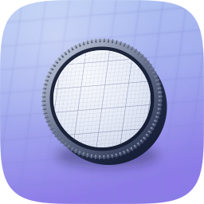
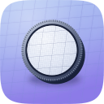
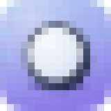
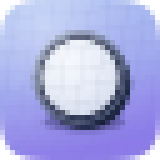
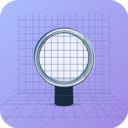

Engine B, for comparison
Icon audit · three engines · shipped master: icon-master.svg (Engine A)
Device: a jeweller's loupe over a wireframe grid, the cell under the lens resolving finer while the surroundings stay soft, rim milled like a wax seal. One object, two readings: the instrument that looks close, and the mark of attestation.

256 → 128
128 → 64The 48px row is here because a Finder list and a marketplace tile render at it, and an icon surviving 128 and 16 can still collapse between them.

master @ 16px
master @ 32px
B — Arrow vector C — Gemini raster, take 2
C — Gemini raster, take 2 C — take 1, rejected
C — take 1, rejected| Engine | Read | Verdict |
|---|---|---|
| A · hand-authored layered SVG | Milled rim reads as a seal rather than a gear (88 fine teeth; at 36 long teeth it read as a cog, which is a different object with a different meaning). Barrel offset with a lit edge gives it body. Lens resolves a grid at a quarter the outside spacing, so "sharper inside" is a visible contrast rather than an assertion. Ground and key light sampled from corpus apple-04. | Shipped |
| B · Arrow vector | Cleanest inside/outside grid contrast of the three, which pushed A's further. But it drew the grid as a room — floor plus back wall — rather than a plane, dropped the milled notches entirely, and its body reads as a pedestal. Independent enough to be worth having; not the stronger take. | Kept, not shipped |
| C · Gemini raster, take 2 | Best material realism of the four: real volumetric barrel, genuine translucency. Concept reads. Set the target A was rebuilt toward. Not shippable as the master — raster, so it cannot be edited as shapes or re-parameterised. | Material target |
| C · take 1 | Drew the tile on a violet ground rather than as one; loupe overflows and clips at the tile edge; barrel near-black so it collapses to a dark blob small; the magnified cell is a faint scribble rather than resolved detail. | Rejected |
| # | Check | Result |
|---|---|---|
| 1 | Silhouette names the subject | Pass — a lens, which is what witnessing looks like |
| 2 | Survives 16px | Pass — lens-on-tile holds; grid detail drops out as expected |
| 3 | One light model | Pass — key upper-left, single contact shadow down-right, consistent across barrel, rim and glass |
| 4 | ≤2 hue families | Pass — periwinkle/violet ground, navy/silver object. No third accent. |
| 5 | Optical centring | Pass — centre at 512,496, nudged up because the barrel carries weight low |
| 6 | Material depth | Pass — barrel gradient, milled rim gradient, translucent glass, specular sweep, rim light, blurred contact shadow |
| 7 | Era grammar (Tahoe gel-glass) | Pass — values sampled from corpus apple-04 / apple-01, not inferred from prose |
| 8 | Signature move present | Pass — sharp-inside/soft-outside is the whole device |
| 9 | No stock category glyph | Pass — a loupe, not a magnifier-with-handle |
| 10 | Layer plan legible | Pass — 10 named layers emitted by build-icon.py; geometry and material are constants, so a fidelity round is a parameter edit |
| 11 | No text in the mark | Pass |
| 12 | Consistent silhouette with siblings | Pass — cut to squircle-path.txt, the marketplace path |
fidelity.py scoring at five sizes. The gap that closes is measurable and was not measured.rsvg-convert, not ImageMagick. IM's built-in SVG renderer dropped every gradient and produced a black tile — worth knowing before anyone re-renders these with magick and concludes the master is broken.